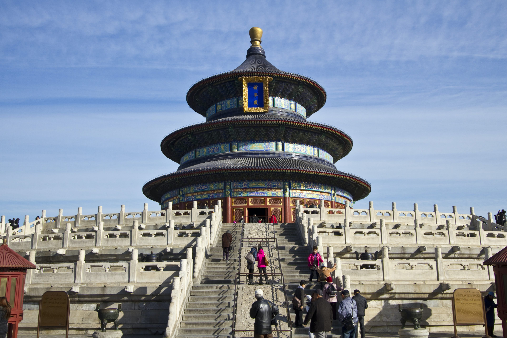

Places to visit and points of interests
There are many places and points of interests to visit and see in China. Here are just a few
of the popular places that tourists may visit:
- Forbidden City: The Forbidden City is located in Beijing and it is an imperial palace complex which was
home to the emperors of the Ming and Qing dynasties. It includes over 900 buildings, including palaces, courtyards and gardens.
- Temple of Heaven: This is another place located in Beijing and it is a group of religious buildings located
in Beijing. It was used by the Ming and Qing dynasties for ceremonies of prayer and sacrifice to the gods of heaven.
It is now a UNESCO World Heritage Site.
- Terracotta army: This area is home to a collection of life-sized terracotta statues that were buried with
the first emperor of China, Qin Shi Huang during the 3rd century BC. They were discovered in 1974 near the city of Xi'an
and it is now also a UNESCO World Heritage Site.
- Great Wall of China: The Great Wall of China is a long series of fortifications built across the northern
borders of China over the course of several centuries. They were built as protection against nomadic groups and they
were used as a way of border control

The Temple of Heaven, located in Beijing.